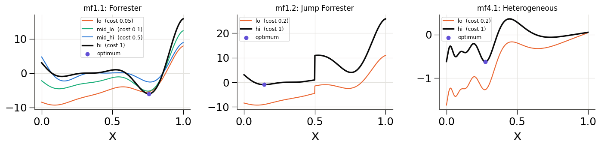
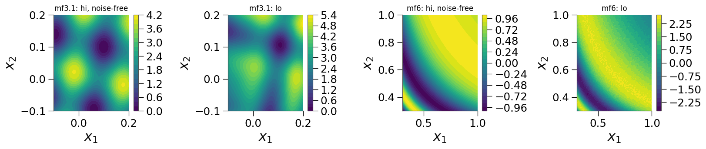
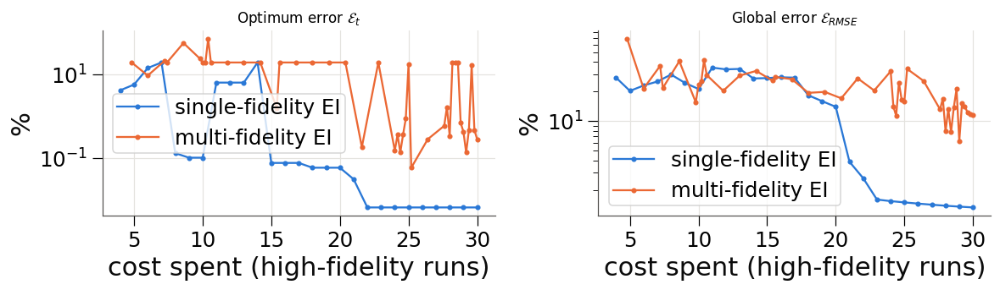

Benchmark Problems¶
multioutreg.active.benchmarks ships analytic test problems whose true answer is known everywhere. They let you score a surrogate or an optimizer exactly instead of against a noisy hold-out set. This tutorial lists them, takes a closer look at the multi-fidelity AVT-331 L1 suite of Mainini et al. (2022), and shows how to score an optimizer with that paper’s error metrics.
What this tutorial covers:
The catalogue: every benchmark, its dimension, levels and costs
The L1 multi-fidelity suite: the 14 problems and their fidelity levels
Is a cheap level worth it?: correlation with the high fidelity, against cost
Scoring an optimizer: \(\mathcal{E}_x\), \(\mathcal{E}_f\), \(\mathcal{E}_t\) and the normalized RMSE during a run
Three things to watch: noise, optimal sets that are not points, and several minimizers
[1]:
import warnings
import matplotlib.pyplot as plt
import numpy as np
import pandas as pd
from multioutreg.active import (
BENCHMARKS,
L1_BENCHMARKS,
ActiveLearner,
MultiFidelityActiveLearner,
get_benchmark,
)
from multioutreg.metrics import normalized_rmse
from multioutreg.surrogates import AdditiveCorrectionVFM, GaussianProcessSurrogate
warnings.filterwarnings("ignore") # GP optimizer convergence chatter
BLUE, ORANGE, AQUA, VIOLET = "#2a78d6", "#eb6834", "#1baf7a", "#6250d6"
INK, MUTED, GRID = "#0b0b0b", "#52514e", "#e4e3df"
LEVEL_COLORS = {"hi": INK, "mid_hi": BLUE, "mid": BLUE, "mid_lo": AQUA, "lo": ORANGE}
plt.rcParams.update({
"figure.dpi": 110, "axes.edgecolor": MUTED, "axes.labelcolor": INK, "axes.titlesize": 11,
"axes.grid": True, "grid.color": GRID, "axes.spines.top": False, "axes.spines.right": False,
})
pd.set_option("display.float_format", lambda v: f"{v:.4g}")
## 1. The catalogue
get_benchmark(name) returns a Benchmark. Call it as b(X, level), with X in the problem’s own bounds, to get one row per point. Levels are ordered cheapest first, and the last one, b.high, is the high fidelity. The general-purpose problems are in BENCHMARKS. The multi-fidelity ones there have a "lo" and a "hi" level with a 10× cost ratio, which you can change with cost_ratio=.
[2]:
def describe(name):
b = get_benchmark(name, seed=0) if name in L1_BENCHMARKS else get_benchmark(name)
n_out = b(b.sample(2, seed=0)).shape[1]
return {"name": name, "inputs": b.n_features, "outputs": n_out, "levels": " / ".join(b.levels),
"costs": " / ".join(f"{b.costs[l]:g}" for l in b.levels), "known minimum": b.minimum,
"budget": b.budget}
pd.DataFrame([describe(n) for n in BENCHMARKS]).set_index("name").drop(columns="budget")
[2]:
| inputs | outputs | levels | costs | known minimum | |
|---|---|---|---|---|---|
| name | |||||
| forrester | 1 | 1 | lo / hi | 1 / 10 | -6.021 |
| branin | 2 | 1 | hi | 1 | 0.3979 |
| currin | 2 | 1 | lo / hi | 1 / 10 | NaN |
| branin_currin | 2 | 2 | hi | 1 | NaN |
| ishigami | 3 | 1 | hi | 1 | NaN |
| hartmann3 | 3 | 1 | hi | 1 | -3.863 |
| park | 4 | 1 | lo / hi | 1 / 10 | NaN |
| borehole | 8 | 1 | lo / hi | 1 / 10 | NaN |
| branin_mf | 2 | 1 | lo / hi | 1 / 10 | 0.3979 |
| heterogeneous | 1 | 1 | lo / hi | 1 / 10 | NaN |
| friedman1 | 10 | 1 | hi | 1 | NaN |
| gramacy_lee | 1 | 1 | hi | 1 | -0.869 |
| himmelblau | 2 | 1 | hi | 1 | 0 |
| zdt1 | 6 | 2 | hi | 1 | NaN |
| zdt2 | 6 | 2 | hi | 1 | NaN |
| zdt3 | 6 | 2 | hi | 1 | NaN |
| viennet2 | 2 | 3 | hi | 1 | NaN |
| dtlz2 | 7 | 3 | hi | 1 | NaN |
## 2. The L1 multi-fidelity suite
L1_BENCHMARKS holds the 14 problems of Mainini et al., Analytical Benchmark Problems for Multifidelity Optimization Methods (arXiv:2204.07867). They were designed to stress multi-fidelity optimizers with localized and multimodal behaviour, discontinuities, noise and growing dimension. Each one carries what the paper prescribes:
costs as a fraction of one high-fidelity run, so
"hi"costs 1a budget in high-fidelity equivalents
the range of the high level:
minimumandmaximumthe optimum:
argmin, orargmin_distancewhen the optimal set is a face or a curve
The paper numbers levels from the top (\(f_1\) is the highest fidelity). Here they are named from the bottom:
Levels |
Names, cheapest first |
Paper |
|---|---|---|
2 |
|
\(f_2\), \(f_1\) |
3 |
|
\(f_3\), \(f_2\), \(f_1\) |
4 (MF1.1 only) |
|
\(f_4\), \(f_3\), \(f_2\), \(f_1\) |
The functions were written from the paper and checked against the reference optima the authors publish with their code (gitlab.com/qudo046/avt-331-l1-benchmarks). Where the paper’s text and that code disagree, the code is followed.
[3]:
l1 = pd.DataFrame([describe(n) for n in L1_BENCHMARKS]).set_index("name")
l1.insert(0, "problem", ["Forrester", "Jump Forrester"] + ["Rosenbrock"] * 3 + ["Shifted-rotated Rastrigin"] * 3
+ ["Heterogeneous"] * 3 + ["Springs", "Spring-masses", "Paciorek (noisy)"])
l1["maximum"] = [get_benchmark(n, seed=0).maximum for n in L1_BENCHMARKS]
l1.drop(columns="outputs")
[3]:
| problem | inputs | levels | costs | known minimum | budget | maximum | |
|---|---|---|---|---|---|---|---|
| name | |||||||
| mf1.1 | Forrester | 1 | lo / mid_lo / mid_hi / hi | 0.05 / 0.1 / 0.5 / 1 | -6.021 | 100 | 15.83 |
| mf1.2 | Jump Forrester | 1 | lo / hi | 0.2 / 1 | -0.9863 | 100 | 25.83 |
| mf2.1 | Rosenbrock | 2 | lo / mid / hi | 0.1 / 0.5 / 1 | 0 | 200 | 3609 |
| mf2.2 | Rosenbrock | 5 | lo / mid / hi | 0.1 / 0.5 / 1 | 0 | 500 | 1.444e+04 |
| mf2.3 | Rosenbrock | 10 | lo / mid / hi | 0.1 / 0.5 / 1 | 0 | 1000 | 3.248e+04 |
| mf3.1 | Shifted-rotated Rastrigin | 2 | lo / mid / hi | 0.00391 / 0.0625 / 1 | 0 | 200 | 4.02 |
| mf3.2 | Shifted-rotated Rastrigin | 5 | lo / mid / hi | 0.00391 / 0.0625 / 1 | 0 | 500 | 10.05 |
| mf3.3 | Shifted-rotated Rastrigin | 10 | lo / mid / hi | 0.00391 / 0.0625 / 1 | 0 | 1000 | 20.1 |
| mf4.1 | Heterogeneous | 1 | lo / hi | 0.2 / 1 | -0.625 | 100 | 0.3615 |
| mf4.2 | Heterogeneous | 2 | lo / hi | 0.2 / 1 | -0.5627 | 200 | 1.835 |
| mf4.3 | Heterogeneous | 3 | lo / hi | 0.2 / 1 | -0.5627 | 300 | 4.359 |
| mf5.1 | Springs | 2 | lo / hi | 0.0167 / 1 | -1 | 200 | 1 |
| mf5.2 | Spring-masses | 4 | lo / hi | 0.0167 / 1 | -1 | 400 | 1 |
| mf6 | Paciorek (noisy) | 2 | lo / hi | 0.2 / 1 | -1 | 200 | 1 |
[4]:
fig, axes = plt.subplots(1, 3, figsize=(13, 3.4))
for ax, name, title in zip(axes, ["mf1.1", "mf1.2", "mf4.1"], ["Forrester", "Jump Forrester", "Heterogeneous"]):
b = get_benchmark(name)
x = np.linspace(*b.bounds[0], 600)[:, None]
for lvl in b.levels:
ax.plot(x, b(x, lvl), color=LEVEL_COLORS[lvl], lw=2.2 if lvl == "hi" else 1.4,
label=f"{lvl} (cost {b.costs[lvl]:g})")
ax.scatter(b.argmin[:, 0], [b.minimum], color=VIOLET, zorder=5, s=30, label="optimum")
ax.set(title=f"{name}: {title}", xlabel="x")
ax.legend(fontsize=8)
plt.tight_layout()
plt.show()

In 2-D the levels can differ in more than scale. Below are the high and low levels of the shifted-rotated Rastrigin (MF3.1) and the noisy Paciorek (MF6). For MF6 the high level is shown noise-free, using b.true_value (see Section 5).
[5]:
fig, axes = plt.subplots(1, 4, figsize=(15, 3.4))
for k, name in enumerate(["mf3.1", "mf6"]):
b = get_benchmark(name, seed=0)
g1, g2 = (np.linspace(*b.bounds[i], 150) for i in range(2))
G = np.array(np.meshgrid(g1, g2)).reshape(2, -1).T
for j, (label, Z) in enumerate([("hi, noise-free", b.true_value(G)), ("lo", b(G, "lo"))]):
ax = axes[2 * k + j]
cs = ax.contourf(g1, g2, Z.reshape(150, 150), levels=25, cmap="viridis")
plt.colorbar(cs, ax=ax)
ax.set(title=f"{name}: {label}", xlabel="$x_1$", ylabel="$x_2$")
ax.grid(False)
plt.tight_layout()
plt.show()

## 3. Is a cheap level worth it?
A lower level helps only if it predicts the high fidelity well and costs much less. The table gives each lower level’s correlation with "hi" over 4096 Sobol points, next to its cost. Most are above 0.9. Four are not:
MF6’s low level (\(r \approx 0.39\)) carries six times the noise and a strong cosine bias.
MF1.1’s cheapest level,
lo(\(r \approx 0.74\)), is affine in"hi"but adds a large linear trend. The two middle levels are much closer.MF4.1’s low level (\(r \approx 0.86\)) is a bridge function whose scale changes with \(x\).
MF5.1’s low level (\(r \approx 0.88\)) integrates the same ODE with a time step 60 times larger.
Those are the levels a multi-fidelity method has the least to gain from.
[6]:
rows = []
for name in L1_BENCHMARKS:
b = get_benchmark(name, seed=0)
X = b.sample(4096, seed=0)
hi = b.true_value(X).ravel()
for lvl in b.levels[:-1]:
rows.append({"name": name, "level": lvl, "cost": b.costs[lvl], "corr with hi": np.corrcoef(hi, b(X, lvl).ravel())[0, 1]})
pd.DataFrame(rows).set_index(["name", "level"])
[6]:
| cost | corr with hi | ||
|---|---|---|---|
| name | level | ||
| mf1.1 | lo | 0.05 | 0.7357 |
| mid_lo | 0.1 | 0.9374 | |
| mid_hi | 0.5 | 0.9455 | |
| mf1.2 | lo | 0.2 | 0.962 |
| mf2.1 | lo | 0.1 | 0.9982 |
| mid | 0.5 | 0.9999 | |
| mf2.2 | lo | 0.1 | 0.9938 |
| mid | 0.5 | 0.9999 | |
| mf2.3 | lo | 0.1 | 0.9812 |
| mid | 0.5 | 0.9999 | |
| mf3.1 | lo | 0.00391 | 0.9377 |
| mid | 0.0625 | 0.9722 | |
| mf3.2 | lo | 0.00391 | 0.9353 |
| mid | 0.0625 | 0.9724 | |
| mf3.3 | lo | 0.00391 | 0.9337 |
| mid | 0.0625 | 0.9726 | |
| mf4.1 | lo | 0.2 | 0.8643 |
| mf4.2 | lo | 0.2 | 0.9465 |
| mf4.3 | lo | 0.2 | 0.9569 |
| mf5.1 | lo | 0.0167 | 0.8769 |
| mf5.2 | lo | 0.0167 | 0.9878 |
| mf6 | lo | 0.2 | 0.3893 |
## 4. Scoring an optimizer
Mainini et al. score a method by the estimated optimum \(\hat x^\star\) it reports, with all coordinates scaled to the unit cube:
and the global accuracy of its surrogate by \(\mathcal{E}_{\rm RMSE}\), the RMSE over the range \(f_{\max} - f_{\min}\). b.optimum_errors(x_hat) returns the first three. It evaluates \(f(\hat x^\star)\) with the true high level, not the surrogate’s prediction. multioutreg.metrics.normalized_rmse gives the fourth. For data that isn’t a Benchmark, use design_error, goal_error, total_error and optimum_errors from multioutreg.metrics.
Below, two optimizers run on MF4.1 (heterogeneous, 1-D) with the same budget of 30 high-fidelity equivalents. This is a short run; the paper’s budget is 100.
Single-fidelity EI:
ActiveLearnerwith expected improvement, on"hi"only.Multi-fidelity EI:
MultiFidelityActiveLearnerwith an AR1 surrogate (AdditiveCorrectionVFM) and multi-fidelity EI, payingb.costsper run.
At every step \(\hat x^\star\) is the minimizer of the surrogate mean on a dense grid.
[7]:
b = get_benchmark("mf4.1")
BUDGET = 30
X_test = b.sample(1024, seed=1)
F_test = b.true_value(X_test)
grid = b.sample(4096, seed=2)
def score(model, cost):
x_hat = grid[[np.argmin(np.asarray(model.predict(grid)).ravel())]]
nrmse = normalized_rmse(F_test, model.predict(X_test), b.minimum, b.maximum)
return {"cost": cost, **b.optimum_errors(x_hat), "NRMSE": nrmse}
sf_trace, mf_trace = [], []
sf = ActiveLearner(GaussianProcessSurrogate, b.bounds, acquisition="ei", random_state=0)
sf.run(b, n_init=4, n_iter=BUDGET - 4, callback=lambda L, rec: sf_trace.append(score(L.fit(), len(L.X_))))
mf = MultiFidelityActiveLearner(
lambda: AdditiveCorrectionVFM(GaussianProcessSurrogate, GaussianProcessSurrogate),
b.bounds, b.levels, b.costs, acquisition="ei", random_state=0,
)
mf.run({lvl: (lambda X, lvl=lvl: b(X, lvl)) for lvl in b.levels}, budget=BUDGET, X_test=X_test, Y_test=F_test,
callback=lambda L, rec: mf_trace.append(score(L.fit(), L.total_spent)))
sf_trace, mf_trace = pd.DataFrame(sf_trace), pd.DataFrame(mf_trace)
print("multi-fidelity runs per level:", {lvl: len(v[0]) for lvl, v in mf.data_.items()})
pd.DataFrame({"single-fidelity EI": sf_trace.iloc[-1], "multi-fidelity EI": mf_trace.iloc[-1]}).T
multi-fidelity runs per level: {'lo': 45, 'hi': 21}
[7]:
| cost | Ex | Ef | Et | NRMSE | |
|---|---|---|---|---|---|
| single-fidelity EI | 30 | 9.308e-05 | 1.222e-06 | 6.582e-05 | 0.01331 |
| multi-fidelity EI | 30 | 0.003574 | 0.001797 | 0.002828 | 0.116 |
[8]:
fig, axes = plt.subplots(1, 2, figsize=(11, 3.4))
for ax, metric, title in zip(axes, ["Et", "NRMSE"], ["Optimum error $\\mathcal{E}_t$", "Global error $\\mathcal{E}_{RMSE}$"]):
for trace, color, label in [(sf_trace, BLUE, "single-fidelity EI"), (mf_trace, ORANGE, "multi-fidelity EI")]:
ax.plot(trace["cost"], 100 * np.maximum(trace[metric].abs(), 1e-8), color=color, marker="o", ms=3, label=label)
ax.set(yscale="log", xlabel="cost spent (high-fidelity runs)", ylabel="%", title=title)
ax.legend()
plt.tight_layout()
plt.show()

Here the high-fidelity-only run wins on both measures. This fits Section 3: MF4.1’s cheap level is one of the weakest in the suite, so the runs spent on it buy little. The same comparison on a problem with a strongly correlated cheap level can come out the other way. The replication notebook mentioned below runs it across the whole suite.
## 5. Three things to watch
Noise (MF6). b(X) returns a fresh noisy draw on every call (seed it with get_benchmark("mf6", seed=...)). Score against b.true_value(X), the noise-free high level. optimum_errors already does this.
[9]:
b6 = get_benchmark("mf6", seed=0)
x = np.array([[0.6, 0.7]])
print("noisy draws:", np.round([b6(x)[0, 0] for _ in range(4)], 4), " truth:", round(b6.true_value(x)[0, 0], 4))
noisy draws: [0.691 0.6877 0.6974 0.6907] truth: 0.6894
Optimal sets that are not points. On MF4.2 and MF4.3 the whole face \(x_1 = 0\) is optimal. On MF6 the optima are two curves, \(x_1 x_2 = 2/((3+4j)\pi)\). These benchmarks measure \(\mathcal{E}_x\) to the nearest point of the set (argmin_distance, or a dense argmin), so any point on it scores zero.
[10]:
b42 = get_benchmark("mf4.2")
pd.DataFrame({str(p): b42.optimum_errors([p]) for p in ([0.0, 0.1], [0.0, 0.9], [0.2, 0.9])}).T
[10]:
| Ex | Ef | Et | |
|---|---|---|---|
| [0.0, 0.1] | 0 | 7.124e-11 | 5.037e-11 |
| [0.0, 0.9] | 0 | 7.124e-11 | 5.037e-11 |
| [0.2, 0.9] | 0.1414 | 0.1843 | 0.1643 |
Several minimizers (MF5.2). The spring-mass problem reaches its minimum of −1 at more than one design. The paper’s Table 4 gives only one of them, so an optimizer that finds another scores \(\mathcal{E}_f \approx 0\) but a large \(\mathcal{E}_x\). Read \(\mathcal{E}_f\) first on this problem.
[11]:
b52 = get_benchmark("mf5.2")
other = [[3.2647, 2.8543, 1.2267, 1.4122]]
print("f at a second minimizer:", round(b52.true_value(other)[0, 0], 4))
b52.optimum_errors(other)
f at a second minimizer: -1.0
[11]:
{'Ex': 0.697696019546867,
'Ef': 3.5618207272491986e-09,
'Et': 0.4933455866284517}
Going further¶
examples/mainini_l1_replication.ipynbin the repository runs the paper’s full protocol: all 14 problems, the Table 2 budgets, 10 repetitions, and checkpoints at 25/50/75/100 %. It places the results beside the paper’s Table 5 and checks the paper’s claims one by one.examples/mf_surrogates.ipynbcompares the package’s multi-fidelity surrogates on the 4-level Forrester problem (MF1.1).Active Learning on Benchmark Functions and Multi-Fidelity Surrogate Modeling cover the learners and surrogates used here.